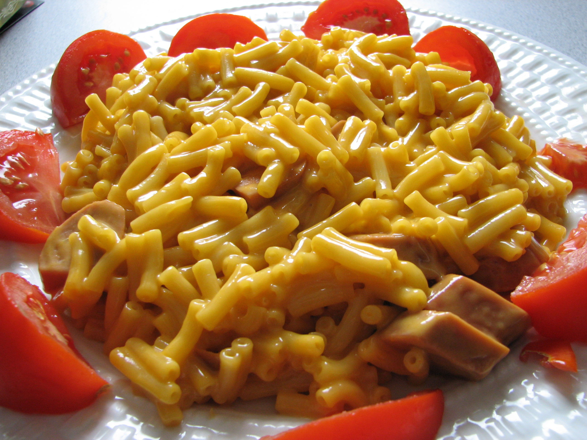

Macaroni and cheese

Description
Melted Butter with margarine,with added bread crumbs on hot cooked noodles with parmagain cheese.
Ingredients
- 2 1/2 cups elbow macaroni
- 1/4 cup all-purpose flour
- 1/4 cup butter
- 4 cups milk
- 1/2 teaspoon salt
- 1 pound shredded cheddar cheese
- cup butter, melted
- 1 sleeve buttery round crackers,crushed
Directions
- Pour uncooked noodles in hot water
- Add cheese after well cooked
- Empty pan and add flour and milk
- Mix the butter with the flower
- Stir until well stirred
- Empty pan into bowl